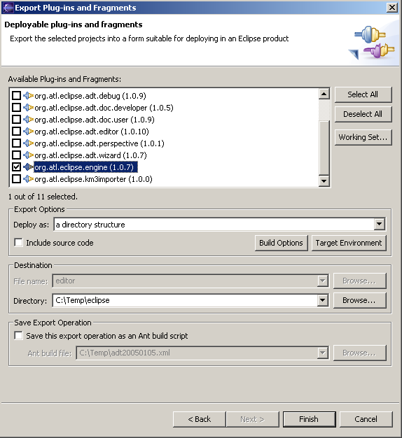

There were some bugs with the Eclipse version before 3.0.1.
Select all the plug-ins you want to extract. Then, you should make a right click and choose Export -> Deployable plug-ins and fragments.
First you need to export the plug-in org.atl.eclipse.adt.engine because others ADT plug-ins depend on it.
You should make a right click on its plug-in, choose Export -> Deployable plug-ins and fragments.
In Export Options, select Deploy as "a directory structure" and called the directory "eclipse".
If you want it is possible to include source code.

Click on the button Finish.
When export of the plug-in is finished, do the same with others ADT plug-ins.
Plug-ins to select: